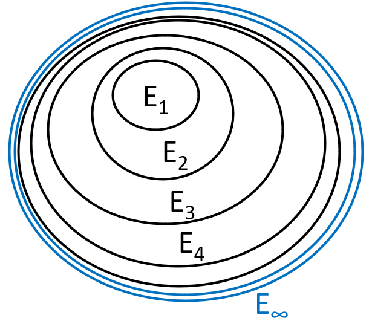

flowchart LR S["S(t)"] --βI/N--> I["I(t)"] I --γ--> R["R(t)"]
Estimate the risk of outbreaks
Ong Phuc Thinh
Based on these papers
Southall E, Ogi-Gittins Z, Kaye AR, Hart WS, Lovell-Read FA, Thompson RN. A practical guide to mathematical methods for estimating infectious disease outbreak risks. Journal of Theoretical Biology. 2023 Jan 20:111417. https://doi.org/10.1016/j.jtbi.2023.111417
Sachak-Patwa R, Byrne HM, Dyson L, Thompson RN. The risk of SARS-CoV-2 outbreaks in low prevalence settings following the removal of travel restrictions. Communications Medicine. 2021 Oct 15;1(1):39. https://doi.org/10.1038/s43856-021-00038-8
Same corresponding author
Associate Professor of Applied Mathematics
Mathematics Institute, University of Warwick
PhD in Mathematical Epidemiology, University of Cambridge
Compartmental outbreak models (1)
- \(\beta\): infection rate
- \(\gamma\): removal rate
Compartmental outbreak models (2)
One contact can lead to infection or not by randomness
Deterministic model is inappropriate
Instead, use stochastic model
Stochastic SIR models (1)
flowchart LR S["S(t)"] --βI/N--> I["I(t)"] I --γ--> R["R(t)"]
Gillespie algorithm
2 possible events:
- \(\mathbb{P}\text{(infection event)} = \frac{\beta \frac{I(t)}{N} S(t)}{\beta \frac{I(t)}{N} S(t) + \gamma I(t)}\)
- \(\mathbb{P}\text{(removal event)} = \frac{\gamma I(t)}{\beta \frac{I(t)}{N} S(t) + \gamma I(t)}\)
Stochastic SIR models (2)
Early stage:
\(I(t) = 1\), \(S(t) \approx N\)
\(\mathbb{P}\text{(infection event)} = \frac{\beta \frac {I(t)} {N} S(t)}{\beta \frac {I(t)} {N} S(t) + \gamma I(t)} \approx \frac {\beta} {\beta + \gamma}\)
\(\mathbb{P}\text{(removal event)} = \frac {\gamma I(t)} {\beta \frac {I(t)} {N} S(t) + \gamma I(t)} \approx \frac {\gamma} {\beta + \gamma}\)
Stochastic SIR models (3)
Probability that 1 infected host generates k infections is:
\[\mathbb{P}(X = k) = \left( \frac{\beta}{\beta + \gamma} \right)^k \times \frac{\gamma}{\beta + \gamma}\]
First generate k infections
Then be removed
The number of failures prior to the first success
A geometric distribution with “success probability” \(\frac {\gamma} {\beta + \gamma}\)
Methods for estimating the probability of a major outbreak
Two methods:
Probability generating functions
First-step analysis
Galton-Watson branching process (1)
The early outbreak can be approximated as a branching process:
Each infected individual generates a number of new infections that is drawn from the offspring distribution
Assumption: All infected cases independently generate secondary cases (independently draws from the offspring distribution)
The offspring distribution is geometric distribution (explained above)
Galton-Watson branching process (2)
Ignore the precise times at which infections occur
Infections can be separated into discrete generations
All infections generated by a specific individual appear in the same generation.
Galton-Watson branching process (3)

Start with 1 individual at generation n = 0.
Each individual lives 1 generation, has \(Y\) offspring, and dies.
\(Y\) takes values 0, 1, 2, …, and the probability of producing \(k\) offspring is \(\mathbb{P}(Y = k) = p_k\).
Galton-Watson branching process (4)
All individuals reproduce independently.
Individuals 1, 2, …, n have family sizes \(Y_1\), \(Y_2\), …, \(Y_n\), where each \(Y_i\) has the same offspring distribution as \(Y\).
Extinct by generation n
Let \(Z_n\) be the size of generation n.
A branching process extinct by generation n when there is 0 offspring at generation n.
Let \(E_n\) be the event that there is 0 offspring at generation n, or \(E_n = \{Z_n = 0\}\)
\[\mathbb{P}\text{(extinct by generation n)} = \mathbb{P}(E_n) = \mathbb{P}(Z_n = 0)\]
Ultimate extinction (1)
Ultimate extinction is probability that the population will be extinct by generation n, for any value of n. This is the probability of extinct by gen 0 or gen 1 or gen 2…
\[\mathbb{P}\text{(ultimate extinction)} = \mathbb{P} \left( \bigcup_{n = 0}^\infty E_n \right)\]
Ultimate extinction (2)

\(E_0 \subseteq E_1 \subseteq E_2 \subseteq E_3\)… (\(E_0\) is a subset of \(E_1\) and so on). We obtain the union when reach generation \(\infty\)
Ultimate extinction (3)
\[\mathbb{P}\text{(ultimate extinction)} = \mathbb{P}(\lim_{n\to\infty} E_n)\]
By the Continuity Theorem: we can take the limit outside
\[\mathbb{P}(\lim_{n\to\infty} E_n) = \lim_{n\to\infty}\mathbb{P}(E_n) = \lim_{n\to\infty}\mathbb{P}(Z_n = 0)\]
So ultimate extinction is the limit of event “0 offspring at generation n”, when \(n \to \infty\).
Prove: Taking the limit out
Let \(f(x) = x^3\), \(g(x) = x + 2\), find \(lim_{x \to 3} f(g(x))\)
There are two ways to solve this:
- Plug \(g(x) = x + 2\) inside of \(f(x)\)
\(f(g(x)) = (x + 2)^3\)
\(lim_{x \to 3} (x + 2)^3 = 5^3 = 125\)
- Because \(f(x)\) is a continuous function, we can put the \(lim\) inside of \(f(x)\)
\(lim_{x \to 3} f(g(x)) = f[lim_{x \to 3} g(x)] = f[lim_{x \to 3} (x + 2)] = f(5) = 125\)
Ultimate extinction (4)
If \(G_{Z_n}(s)\) is the PGF of \(Z_n\) (number of offspring at generation n).
\(G_{Z_n}(s) = s^0 \mathbb{P}(Z_n = 0) + s^1 \mathbb{P}(Z_n = 1) + s^2 \mathbb{P}(Z_n = 2)..\)
We have \(G_{Z_n}(0) = \mathbb{P}(Z_n = 0)\).
For ease of notation, we write \(G_{Z_n}(0) = G_n(0)\).
So:
\[\mathbb{P}\text{(ultimate extinction)} = \lim_{n\to\infty} G_n(0)\]
Ultimate extinction (5)
Theorem
The ultimate extinction probability q is the smallest non-negative solution of the equation \(G_X(q) = q\) (or the fixed point). \(G_X(q)\) is the probability generating function.
Probability generating function
PGF is a function that can generate all probabilities of the distribution.
\[G_X(s) = \mathbb{E}(s^X) = \sum_{x = 0}^\infty s^x \mathbb{P}(X = x)\]
\[G_X(s) = s^0 \mathbb{P}(X = 0) + s^1 \mathbb{P}(X = 1) + s^2 \mathbb{P}(X = 2) + ...\]
Calculate probabilities with PGF (1)
Let \(p_0 = \mathbb{P}(X = 0)\), \(p_1 = \mathbb{P}(X = 1)\)…
\[G_X(s) = s^0 p_0 + s^1 p_1 + s^2 p_2 + s^3 p_3 + s^4 p_4 ...\]
If \(s = 0\), then \(G_X(0) = 0^0 p_0 + 0^1 p_1 + 0^2 p_2 + 0^3 p_3 + ...\)
Because \(0^0 = 1\) and \(0^1 = 0^2 = 0^3 = ... = 0\)
Therefore \(G(0) = p_0\)
Calculate probabilities with PGF (2)
\[G_X(s) = s^0 p_0 + s^1 p_1 + s^2 p_2 + s^3 p_3 + s^4 p_4 ...\]
First derivative: \(G'_X(s) = p_1 + 2 p_2 s + 3 p_3 s^2 + 4 p_4 s^3 ...\)
If \(s = 0\), then \(G'_X(0) = p_1\)
Second derivative: \(G''_X(s) = 2 p_2 + 6 p_3 s + 12 p_4 s^2 ...\)
If \(s = 0\), then \(G''_X(0) = 2 p_2\) or \(p_2 = \frac{G''_X(0)}{2}\)
PGF of geometric distribution (1)
In the SIR model, the offspring distribution is a geometric distribution with “success probability” \(\frac {\gamma} {\beta + \gamma}\)
\[G_X(s) = \mathbb{E}(s^X) = \sum_{x = 0}^\infty s^x \mathbb{P}(X = x)\]
Let \(X \sim \text{Geometric(p)}\) with \(p\) is the success probability
Then the PMF \(\mathbb{P}(X = x) = (1 - p)^xp\) (having \(x\) failures before success)
PGF of geometric distribution (2)
\(G_X(s) = \mathbb{E}(s^X) = \sum_{x = 0}^\infty s^x \mathbb{P}(X = x)\)
\(= \sum_{x = 0}^\infty s^x (1 - p)^x p = p \sum_{x = 0}^\infty [s(1 - p)]^x\)
\(= p\{[s(1 - p)]^0 + [s(1 - p)]^1 + [s(1 - p)]^2 + ...\}\)
\(= p[1 + s(1 - p) + [s(1 - p)]^2 + ...]\)
PGF of geometric distribution (3)
\(G_X(s) = p[1 + s(1 - p) + [s(1 - p)]^2 + ...]\)
We have: \(1 + r + r^2 + r^3 + ... = \frac {1} {1 - r}\) with \(|r| < 1\)
\(A = 1 + r + r^2 + r^3 + ...\)
\(rA = r + r^2 + r^3 + r^4 + ...\)
\(\Rightarrow A - rA = 1 \Leftrightarrow A(1 - r) = 1 \Leftrightarrow A = \frac {1} {1 - r}\)
Here \(r = s(1 - p) \Rightarrow G_X(s) = \frac{p}{1 - s(1 - p)}\)
Ultimate extinction of SIR models (1)
In the SIR model, the offspring distribution is a geometric distribution with “success probability” \(\frac {\gamma} {\beta + \gamma}\)
Also for SIR model: \(R_0 = \frac{\beta}{\gamma} \Rightarrow \gamma = \frac{\beta}{R_0}\)
Plug \(\gamma = \frac{\beta}{R_0}\) to the success probability
\(\frac {\gamma} {\beta + \gamma} = \frac{\frac{\beta}{R_0}}{\beta + \frac{\beta}{R_0}} = \frac{\frac{\beta}{R_0}}{\frac{\beta(R_0 + 1)}{R_0}} = \frac{1}{R_0 + 1}\)
Ultimate extinction of SIR models (2)
Now the “success probability” is \(p = \frac{1}{R_0 + 1}\)
The PGF of geometric distribution is \(G_X(s) = \frac{p}{1 - s(1 - p)}\)
\(G_X(s) = \frac{\frac{1}{R_0 + 1}}{1 - s \left( 1 - \frac{1}{R_0 + 1} \right)} = \frac{\frac{1}{R_0 + 1}}{\frac{R_0 + 1 - s(R_0 + 1 - 1)}{R_0 + 1}} = \frac{1}{R_0 + 1 - sR_0}\)
Ultimate extinction probability \(q\) is the solution of \(G_X(q) = q\)
\(\Leftrightarrow \frac{1}{R_0 + 1 - qR_0} = q\)
\(\Leftrightarrow R_0q^2 - (R_0 + 1)q + 1 = 0\)
Ultimate extinction of SIR models (3)
\[R_0q^2 - (R_0 + 1)q + 1 = 0\]
The solutions are \(q = 1\) and \(q = \frac{1}{R_0}\)
The risk of outbreaks is:
\[1 - \mathbb{P}\text{(ultimate extinction)} = 1 - q = 1 - \frac{1}{R_0}\]
Summary: the PGF method
Define your stochastic model / branching process
Derive the offspring distribution
Get the PGF \(G_X(s)\) of the offspring distribution
Solve \(G_X(q) = q\) for the ultimate extinction probability \(q\)
The risk of outbreaks is \(1 - q\)
First-step analysis (1)
Conditioning on the first event.
The first event can only be either (i) an infection or (ii) a removal.
First-step analysis (2)
\(\mathbb{P}\text{(no outbreak)} = \mathbb{P}(\text{no outbreak} \cap \text{1st is infection})\)
\(+ \mathbb{P}(\text{no outbreak} \cap \text{1st is removal})\)
\(= \mathbb{P}(\text{no outbreak | 1st is infection}) \times \mathbb{P}(\text{1st is infection})\)
\(+ \mathbb{P}(\text{no outbreak | 1st is removal}) \times \mathbb{P}(\text{1st is removal})\)
First-step analysis (3)
Let call:
\(q_0 = \mathbb{P}(\text{no outbreak | 0 infection}) = 1\)
\(q_1 = \mathbb{P}(\text{no outbreak | 1 infection})\)
\(q_2 = \mathbb{P}(\text{no outbreak | 2 infections})\)
First-step analysis (4)
Our model is the branching process start from 1 infection, so we are computing \(q_1\).
First-step analysis (5)
\(\mathbb{P}\text{(no outbreak)} =\)
\(= \mathbb{P}(\text{no outbreak | 1st is infection}) \times \mathbb{P}(\text{1st is infection})\)
\(+ \mathbb{P}(\text{no outbreak | 1st is removal}) \times \mathbb{P}(\text{1st is removal})\)
\(\mathbb{P}\text{(no outbreak)} = q_1\)
\(\mathbb{P}(\text{no outbreak | 1st is infection}) = q_2\)
\(\mathbb{P}(\text{1st is infection}) = \frac{\beta}{\beta + \gamma}\)
\(\mathbb{P}(\text{no outbreak | 1st is removal}) = q_0 = 1\)
\(\mathbb{P}(\text{1st is removal}) = \frac{\gamma}{\beta + \gamma}\)
First-step analysis (6)
\[q_1 = \frac{\beta}{\beta + \gamma} q_2 + \frac{\gamma}{\beta + \gamma}\]
In branching process, individuals are independently generates new infections, so \(q_2 = q_1^2\).
\[q_1 = \frac{\beta}{\beta + \gamma} q_1^2 + \frac{\gamma}{\beta + \gamma}\]
Solve this we also get \(q_1 = 1\) or \(q_1 = \frac{\gamma}{\beta} = \frac{1}{R_0}\).
More complex epidemiological models
Gamma distributed infectious period
Using constant removal rate assume that the infectious period is exponentially distributed.
flowchart LR S["S(t)"] --βI/N--> I["I(t)"] I --γ--> R["R(t)"]
We split the I compartment into n subcompartments, as a gamma distribution with shape n and rate \(\lambda\) (Erlang distribution) can be thought of as the sum of n exponential distributions each with rate \(\lambda\).
flowchart LR S["S(t)"] --βI/N--> I1["I1(t)"] I1 --γnI1--> I2["I2(t)"] I2 --γnI2--> I3["..."] I3 --> In["In(t)"] In --γnIn--> R["R(t)"]
The \(SI_{n}R\) model (1)
Define your stochastic model / branching process: \(SI_{n}R\) model
Derive the offspring distribution
The offspring distribution is also a geometric distribution with success probability \(\frac{1}{\frac{R_0}{n} + 1}\).
Because the host is expected to spend 1/n infectious period in each of the infectious compartments.
The \(SI_{n}R\) model (2)
- Get the PGF \(G_X(s)\) of the offspring distribution
- \(G_X(s) = \left( \frac{1}{\frac{R_0}{n} + 1 - s \frac{R_0}{n}} \right)^n\)
- Solve \(G_X(q) = q\) for the ultimate extinction probability \(q\)
- \(q = \left( \frac{1}{\frac{R_0}{n} + 1 - q \frac{R_0}{n}} \right)^n\)
The \(SI_{n}R\) model
Code
solve_q <- function(R0, n){
# define the equation
f <- function(q) (1 / ((R0 / n) + 1 - q * (R0 / n))^n) - q
# use uniroot function to find the root of the equation
result <- uniroot(f, lower=0, upper=0.999)$root
return(result)
}
R0 <- 2
n <- seq(0.001, 5, 0.001)
q <- numeric(length(n))
for (i in 1:length(n)){
q[i] <- solve_q(R0, n[i])
}
plot(n, 1-q, type="l", xlab="n", ylab="1-q",
xlim = c(0, 5), ylim = c(0, 0.8))Metrics for assessing the risk of outbreaks
Settings
- \(\Lambda(t)\): vaccination coverage at time t
Instantaneous Outbreak Risk (IOR) (1)
The risk that an imported case initiates an outbreak as opposed to the virus simply fading out, under the assumption that pathogen transmissibility is fixed at its value when the imported case enters the population.
Infection rate: \(\beta (1 - \Lambda(t))\)
Removal rate: \(\mu\)
Reproduction number: \(R_V(t) = \frac{\beta (1 - \Lambda(t))}{\mu}\)
Instantaneous Outbreak Risk (IOR) (2)
First step analysis: the first event is an infection or a removal event
\[q_1 = \frac{\beta (1 - \Lambda(t))}{\beta (1 - \Lambda(t)) + \mu} q_2 + \frac{\mu}{\beta (1 - \Lambda(t)) + \mu} q_0\]
According to branching process assumption \(q_2 = q_1^2\) and \(q_0 = 1\)
\[\beta (1 - \Lambda(t)) q_1^2 - (\beta (1 - \Lambda(t)) + \mu) q_1 + \mu = 0\]
Instantaneous Outbreak Risk (IOR) (3)
Solving this quadratic equation:
\[IOR = 1 - q_1 = \begin{cases} 0 \text{ for } R_V(t) \le 1 \\ 1 - \frac{1}{R_V(t)} \text{ for } R_V(t) > 1 \end{cases}\]
Case Outbreak Risk (COR) (1)
Account for changes in the infection rate over time.
Starting from a single introduction into the population at time \(t\) and conditioning on the possible events events in the next \(\Delta t\) days.
\(\Delta t\): a short time period, so that at most a single event can occur in the interval [\(t, \Delta t\))
Case Outbreak Risk (COR) (2)
\[q_1(t) = \beta (1 - \Lambda(t)) \Delta t \times q_2(t + \Delta t) \\ + \mu \Delta t \times q_0(t + \Delta t) \\ + (1 - \beta (1 - \Lambda(t)) \Delta t - \mu \Delta t) \times q_1(t + \Delta t)\]
Again \(q_2(t + \Delta t) = q_1(t + \Delta t)^2\) and \(q_0 = 1\)
\[q_1(t) = \beta (1 - \Lambda(t)) \Delta t \times q_1(t + \Delta t)^2 \\ + \mu \Delta t + (1 - \beta (1 - \Lambda(t)) \Delta t - \mu \Delta t) \times q_1(t + \Delta t)\]
Case Outbreak Risk (COR) (3)
Rearranging this expression, and taking the limit \(\Delta t \rightarrow 0\)
\[\frac{dq(t)}{dt} = \beta (1 - \Lambda(t))q(t)(1 - q(t) + \mu (q(t) - 1)\]
Solving equation (S2) numerically requires the value of q(t) to be known at a single timepoint. In scenarios in which \(R_V(t)\) is above one when the vaccine programme is completed, we solve this equation backwards in time starting from the final condition \(q(t^*) = \frac{1}{R_V(t^*)}\), where \(t^*\) is the time at which the vaccination programme ends.
Case Outbreak Risk (COR) (4)
For scenarios in which 𝑅!(𝑡) is instead less than one when the vaccination programme is completed, we set \(q(\widetilde{t})\) so that \(1 - q(\widetilde{t})\) matches the Numerical Outbreak Risk (NOR) at time \(t = \widetilde{t}\), where \(\widetilde{t}\) is a value chosen for which \(R_V(\widetilde{t}) > 1\). We then solve equation backwards and forwards in time from \(t = \widetilde{t}\).
Simulated Outbreak Risk (SOR)
Simulating the stochastic model 10,000 times starting from 1 infected individual
SOR = the proportion of simulations in which the number of infected hosts exceeds a pre-defined threshold value (e.g. 100 cases)
Numerical Outbreak Risk (NOR) (1)
NOR is analogous to the SOR, but with the advantage that it can be calculated without performing model simulations.
To calculate the NOR, we define the vector \(p(t) = (p_0(t), ..., p_{M-1}(t), p_M(t))^T\), where, for \(i \le M - 1\), \(p_i(t)\) represents the probability that \(I(t) = i\) and that the number infected has not reached threshold \(M\) by time \(t\). The variable \(p_M(t)\) is defined as the probability that the number infected has reached threshold \(M\) by time \(t\). As with the SOR, we again use a value of M = 100 in our analyses.
Numerical Outbreak Risk (NOR) (2)
Then, the Kolmogorov forward equations are \(\frac{dp(t)}{dt} = Q(t)p(t)\), where:
Numerical Outbreak Risk (NOR) (3)
In this matrix, the state \(I(t) = M\) is an absorbing state (analogous to stopping the simulations as soon as the number infected reaches the threshold M when calculating the SOR). The probability that there are at least M infected individuals at some stage following the introduction of a single infected host into the population at time t is then given by \(NOR(t) = lim_{s \rightarrow \infty}(p_M(s))\), where \(p(t) = (0,1,0 ... ,0,0)^T\). The NOR is therefore calculated by solving the Kolmogorov forward equations numerically until the system converges to an equilibrium state.
Compare four metrics
Acknowledgements
Somya Mehra: for very intuitive explanation of stochastic processes
Asst Prof Thitiya Theparod: for teaching me how to get the two probabilities of the stochastic version from the deterministic version